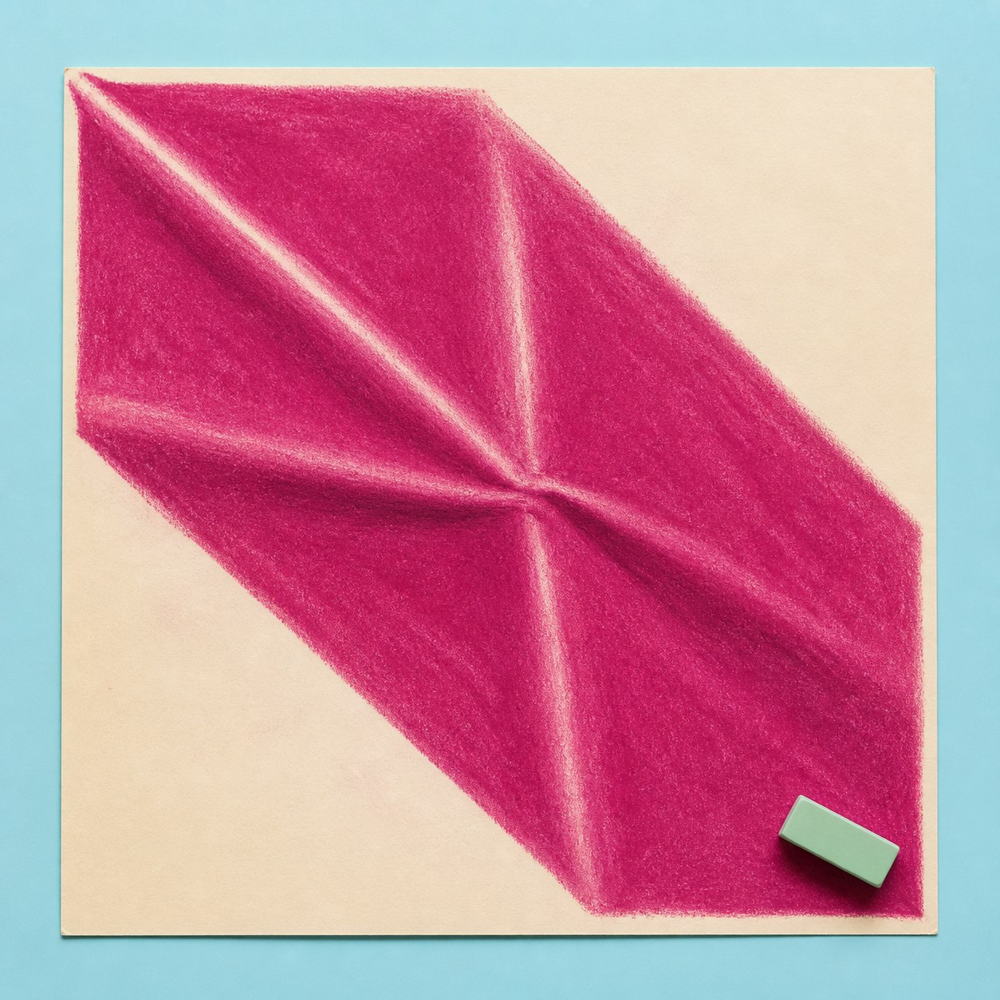
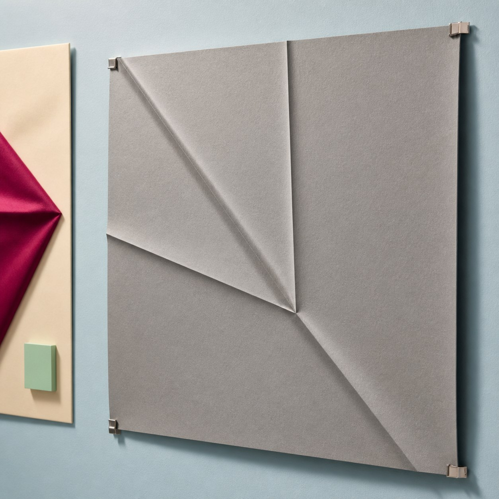
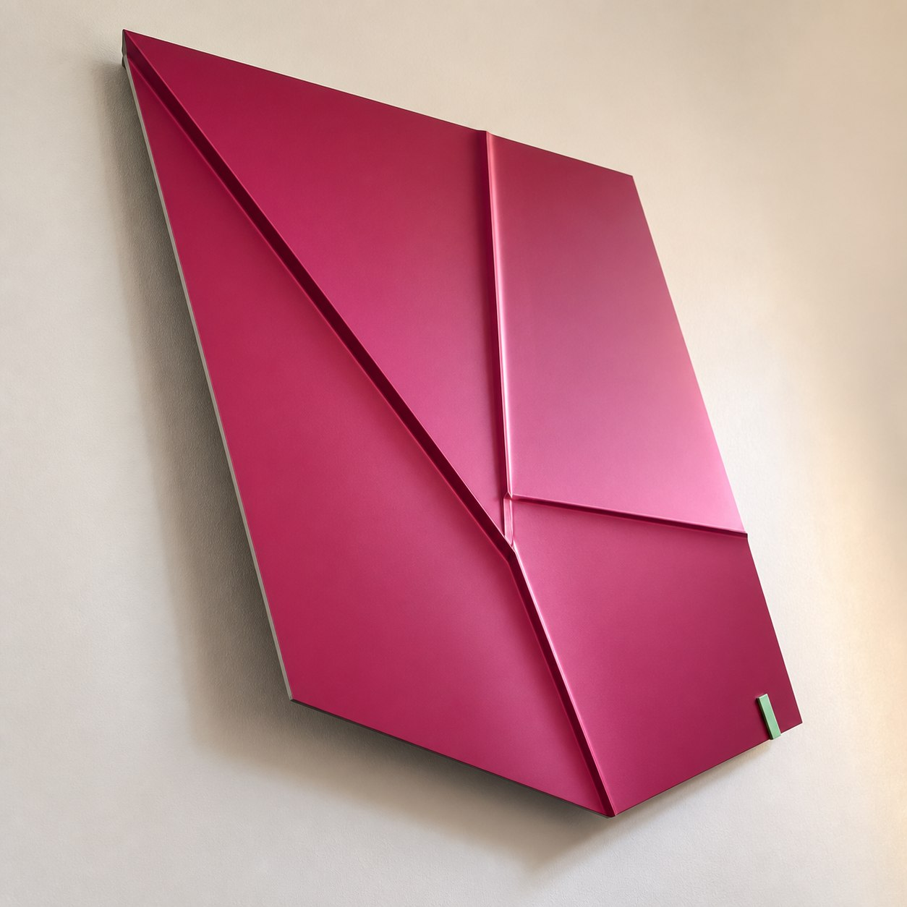
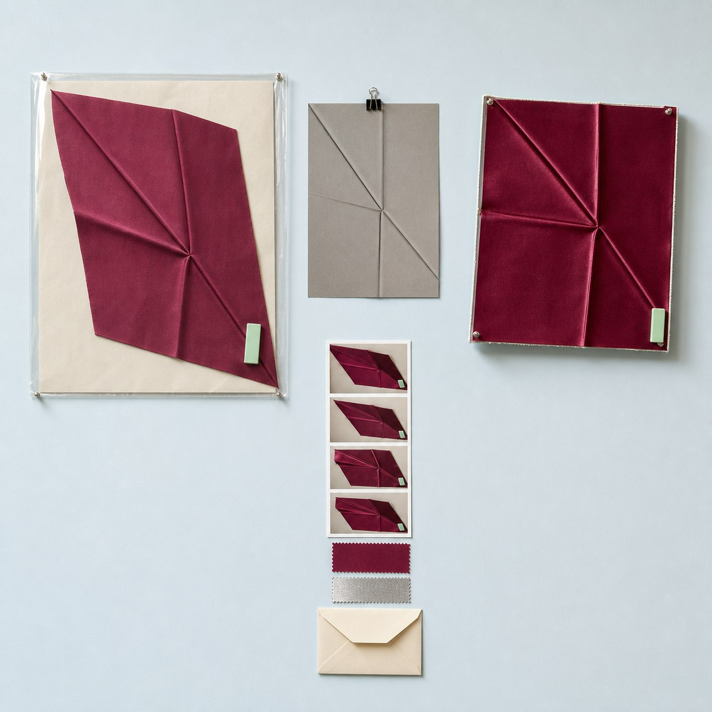

今日观察
一张已经完成、权利边界清楚的粉彩静物里，一块深洋红色布从左上斜落到右下。画面最有力量的地方，是三道折痕在中部错开相遇：一条长脊、一条短谷和一条近乎竖直的脊，共同把光推向不同方向。
从画面进入结构层
元维构沿着这三道折痕做结构判断。长脊负责主要走向，短谷把表面压回去，竖脊则在两者之间撑出转折。布料的柔软纹理只保留为色面和明暗，结构层先记录折线、交点与前后深度。
结构验证
中间灰模用一张连续薄片完成。三道折线分别压出山折与谷折，背面留下浅浅的离墙距离，再从斜侧面检查每一道折痕能否独立读清。这样得到的是可调整的折面状态，而非把整张画做成厚浮雕。
实体方向样本
关系稳定后，方向样本可以使用深洋红色缎面金属、裸银色薄边与一枚浅薄荷色定位片。它悬在墙面前方，完整露出四角和背后的空气；正面看色面，侧面看折痕如何改变光线。
数字档案
原作、折线图、灰模、实体的正侧观察和材料记录可以进入同一份数字档案。本文与配图均为方向示意，不对应真实客户、订单、展览、授权或已经完成的项目。
提交你的作品
如果你的完整作品里也有一处不能被抹平的折痕，可以发来权利边界清楚的原作，并圈出山折与谷折的位置；元维构会整理一版“折线—交点—离墙深度”的结构观察。